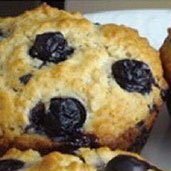

<!DOCTYPE html>
<html>
  <head>
    <title>Dog or my breakfast?</title>
    <script src="https://unpkg.com/jspsych@8.2.3"></script>
    <script src="https://unpkg.com/@jspsych/plugin-html-keyboard-response@2.1.0"></script>
    <script src="https://unpkg.com/@jspsych/plugin-image-keyboard-response@2.1.0"></script>
    <script src="https://unpkg.com/@jspsych/plugin-preload@2.1.0"></script>
    <link href="https://unpkg.com/jspsych@8.2.3/css/jspsych.css" rel="stylesheet" type="text/css" />
  </head>
  <body></body>
  <script>
    
    /* initialize jsPsych */
    var jsPsych = initJsPsych({
        on_finish: function() {
            jsPsych.data.get().localSave('csv', 'dogvsbreakfast.csv');
        }
    });

    /* create timeline */
    var timeline = [];

    /* create array of all images to preload */
    var all_images = [];
    for(var i=1; i<=8; i++){
      all_images.push('chihuahua-'+i+'.jpg');
      all_images.push('dog-'+i+'.jpg');
    }
    for(var i=1; i<=8; i++){
      all_images.push('muffin-'+i+'.jpeg');
      all_images.push('bagel-'+i+'.jpg');
    }

    /* preload images */
    var preload = {
      type: jsPsychPreload,
      images: all_images
    };
    timeline.push(preload);

    /* define welcome message trial */
    var welcome = {
      type: jsPsychHtmlKeyboardResponse,
      stimulus: "Welcome to the experiment. Press any key to begin."
    };
    timeline.push(welcome);

    /* define instructions trial */
    var instructions = {
      type: jsPsychHtmlKeyboardResponse,
      stimulus: `
        <p>In this experiment, a picture will appear in the center 
        of the screen.</p><p>If the picture is a <strong>dog</strong>, 
        press the letter F on the keyboard as fast as you can.</p>
        <p>If the picture is a <strong>baked treat</strong>, press the letter J 
        as fast as you can.</p>
        <div style='width: 700px;'>
        <div style='float: left;'></img>
        <p class='small'><strong>Press the F key</strong></p></div>
        <div style='float: right;'></img>
        <p class='small'><strong>Press the J key</strong></p></div>
        </div>
        <p>Press any key to begin.</p>
      `,
      post_trial_gap: 2000
    };
    timeline.push(instructions);

    /* ROUND 1: chihuahua vs muffin stimuli */
    var chihuahua_muffin_stimuli = [];
    for(var i=1; i<=8; i++){
      chihuahua_muffin_stimuli.push({
        stimulus: 'chihuahua-'+i+'.jpg',
        correct_response: 'f',
        task_type: 'chihuahua-muffin'
      });
      chihuahua_muffin_stimuli.push({
        stimulus: 'muffin-'+i+'.jpeg',
        correct_response: 'j',
        task_type: 'chihuahua-muffin'
      });
    }

    /* define fixation with normal distribution */
    var fixation = {
      type: jsPsychHtmlKeyboardResponse,
      stimulus: '<div style="font-size:60px;">+</div>',
      choices: "NO_KEYS",
      trial_duration: function(){
        // Sample from normal distribution: mean=1000, SD=200
        return Math.round(jsPsych.randomization.sampleNormal(1000, 200));
      },
      data: {
        task: 'fixation'
      }
    };

    /* define test trial */
    var test = {
      type: jsPsychImageKeyboardResponse,
      stimulus: jsPsych.timelineVariable('stimulus'),
      choices: ['f', 'j'],
      data: {
        task: 'response',
        correct_response: jsPsych.timelineVariable('correct_response'),
        task_type: jsPsych.timelineVariable('task_type')
      },
      on_finish: function(data){
        data.correct = jsPsych.pluginAPI.compareKeys(data.response, data.correct_response);
      }
    };

    /* round 1 test procedure */
    var round1_procedure = {
      timeline: [fixation, test],
      timeline_variables: chihuahua_muffin_stimuli,
      randomize_order: true
    };
    timeline.push(round1_procedure);

    /* break between rounds */
    var break_block = {
      type: jsPsychHtmlKeyboardResponse,
      stimulus: `
        <p>Great job! You've completed the first round.</p>
        <p>Take a short break if you need.</p>
        <p>Press any key when you're ready to continue to round 2.</p>
      `
    };
    timeline.push(break_block);

    /* ROUND 2: dog vs bagel stimuli */
    var dog_bagel_stimuli = [];
    for(var i=1; i<=8; i++){
      dog_bagel_stimuli.push({
        stimulus: 'dog-'+i+'.jpg',
        correct_response: 'f',
        task_type: 'dog-bagel'
      });
      dog_bagel_stimuli.push({
        stimulus: 'bagel-'+i+'.jpg',
        correct_response: 'j',
        task_type: 'dog-bagel'
      });
    }

    /* round 2 test procedure */
    var round2_procedure = {
      timeline: [fixation, test],
      timeline_variables: dog_bagel_stimuli,
      randomize_order: true
    };
    timeline.push(round2_procedure);

    /* define debrief with separate stats for each round */
    var debrief_block = {
      type: jsPsychHtmlKeyboardResponse,
      stimulus: function() {
        // chihuahua-muffin round stats
        var cm_trials = jsPsych.data.get().filter({task: 'response', task_type: 'chihuahua-muffin'});
        var cm_correct = cm_trials.filter({correct: true});
        var cm_accuracy = Math.round(cm_correct.count() / cm_trials.count() * 100);
        var cm_rt = Math.round(cm_correct.select('rt').mean());
    
        // dog-bagel round stats
        var db_trials = jsPsych.data.get().filter({task: 'response', task_type: 'dog-bagel'});
        var db_correct = db_trials.filter({correct: true});
        var db_accuracy = Math.round(db_correct.count() / db_trials.count() * 100);
        var db_rt = Math.round(db_correct.select('rt').mean());
    
        return `<h2>Results</h2>
          <h3>Chihuahua vs. Muffin Round:</h3>
          <p>Accuracy: ${cm_accuracy}%</p>
         <p>Average response time: ${cm_rt}ms</p>
      
          <h3>Dog vs. Bagel Round:</h3>
          <p>Accuracy: ${db_accuracy}%</p>
          <p>Average response time: ${db_rt}ms</p>
      
          <p>Press any key to complete the experiment. Thank you!</p>`;
      }
    };
    timeline.push(debrief_block);

    /* start the experiment */
    jsPsych.run(timeline);

  </script>
</html>


